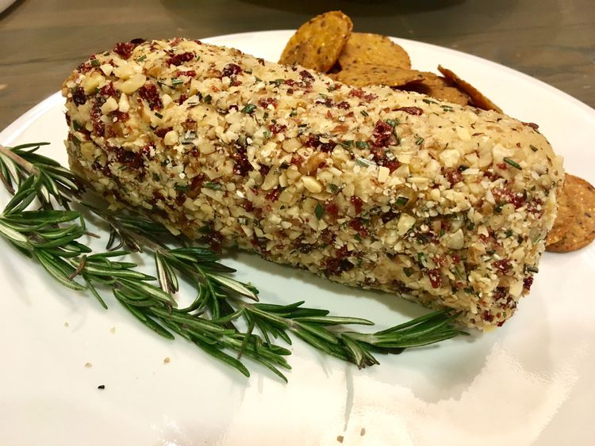

Vegan Cheese with Cranberries

This vegan cheese recipe uses blended cashew nuts and miso paste. Roll it in chopped mixed nuts and dried cranberries for a festive vegan appetizer. Delicious on toast or crackers with raw vegetables.
Ingredients
Steps
- Cover cashews with cold water in a bowl and soak for 4 hours. Drain.
- Combine cashews, nutritional yeast, vinegar, miso paste, and salt in the bowl of a food processor; pulse until blended. Taste and adjust seasonings according to your taste.